Set in a charming desert courtyard, dm_oasis is a small deathmatch map that I made for Counter-Strike: Global Offensive. Although it is not the first map that I released, it is the map where I learned the most about map-making and 3D game development in general.
While I know that it will eventually be surpassed in quality by future maps that I will make, it is the map that I will always be fond of creating. In a way, it serves as a milestone for my hobby of modifying video games.
Early days
dm_stonecold in all it's amateurish glory!
What is now dm_oasis was initially going to be a revamped version of my first released map, dm_stonecold. I was unsatisfied with the design of Stonecold, both in terms of aesthetics and gameplay. The map was simply ugly and boring to play.
I playtested Stonecold with around 6 of my friends after our midterms examinations. We quickly discovered that the design of the map was boring and repetitive. Other criticisms focused on the lighting and wrong proprtions. With those criticisms in mind, I set out to improve the map.
But for some reason, when I went back to the Hammer Editor to fix the map, I felt that the map was unsalvageable and that I would have to start from scratch. I created a new file and initially named it as dm_stonecold2 so that I would not overwrite the first map. I started to look for inspiration and I remembered the old cs_deathmatch map that my friends and I used to play in. I set out to make a map with that layout in mind, pitting the opposite teams in an arena-like layout.
The first build
The first build of dm_oasis
Dm_oasis' layout was influenced heavily by cs_deathmatch. If you are familiar with the latter, you can see similarities. For example, An area for the two opposing teams' spawnpoints that are directly facing each other, towers on both sides and a large space in between.
The eponymous "oasis" was first conceived when I was designing the layout. I thought that the central area was too big and empty. I also thought that the map was all too similar to cs_deathmatch. I needed something to break apart the monotony of the empty space. I added a puddle of water in the middle of the map after my thoughts somehow wandered to an oasis map in Mount and Blade: Warband (I was addicted to M&B: Warband back then).
With that addition, I got a burst of inspiration and ideas for the theme of the map. I settled on a desert theme similar to Dust 2. I subsequently renamed the map to dm_oasis and this is where it began as an entirely separate map from Stonecold.
Further iterations
Now with HDR!!!
Over the course of the next days, I refined the aesthetics and gameplay. I experimented a lot during this time. I kept adding elements to see if they worked and deleted elements that didn't work. The most prominent example of these additions was the car that I put smack in the middle of the water puddle. My reasoning behind putting that car was to give cover to players who are rushing to the other side.
One more addition was the middle alcove from which a player can oversee most of the map. The reason for this addition was to give an incentive for players to move about the map since the aforementioned alcove was a great sniping spot. It was also done out of concern for aesthetics. I figured that the middle alcove was necessary in order to prevent the repetition of the big door entrance.
Back then, aesthetics and gameplay were the two things that I was trying to balance. In retrospect, I should have focused on the gameplay but ehh /shrug.
Polishing and conclusion
Now with HDR and nicer textures!!!
At a certain point, I knew that I'd have to decorate the map to make it look nice and to give it a certain individuality. I added lots of vegetation to emphasize the map's name. I once posted a build of the map on Reddit and a majority of the feedback said that the vegetation looked excessive. Taking the feedback into consideration, I reduced the amount of vegetation and added a "balcony" on top of the buildings to make it seem like a garden that is hanging from the fences. I figured that the towers should dominate the entire map so I increased the height and added an Islamic dome on top of it. The end result is the image above.
For the props that would serve as cover / concealment, I avoided using crates as much as possible. Prop variation was the goal that I was trying to achieve so it would not look repetitive, as well as to give players options on where to hide for cover.
Other prominent change was the building's texture. I changed the texture of the buildings to make it look more modern. The previous texture I used looked like something out of CS 1.6 and I can't have that in a CSGO map! The last major visual change was the water in the middle. I made it larger so that it will appear more prominent.
Gallery
So that is about it for the history of dm_oasis! I tried my best to remember the details but I didn't make it a habit back then to write the development process so /shrug. Although, I hope I was successful in getting across the reasoning behind the aesthetic and gameplay design.
This section shall contain the screenshots of dm_Oasis that I took during development so that it may be left to posterity :D
Early builds
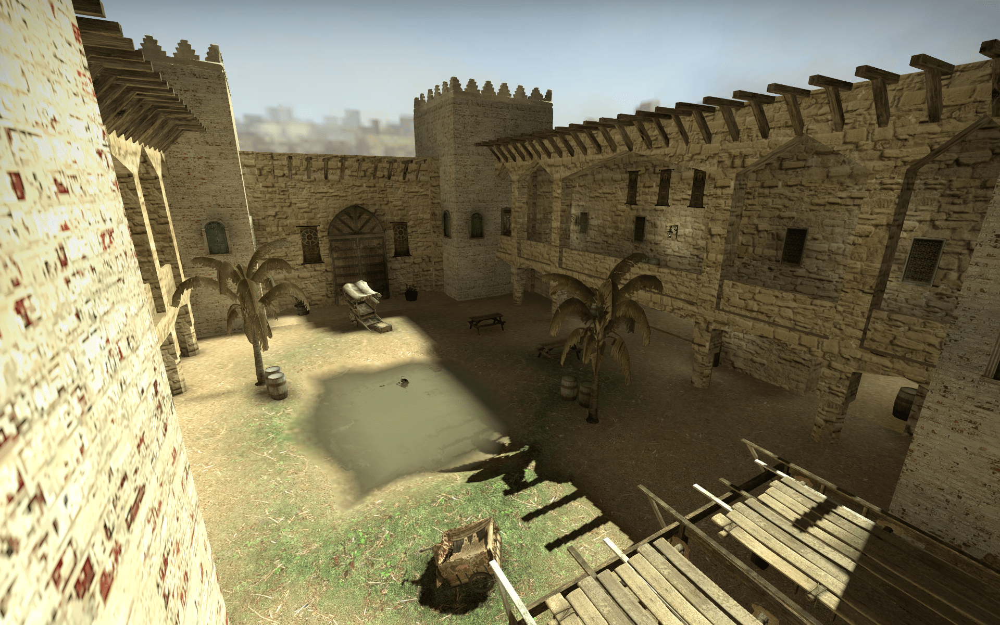 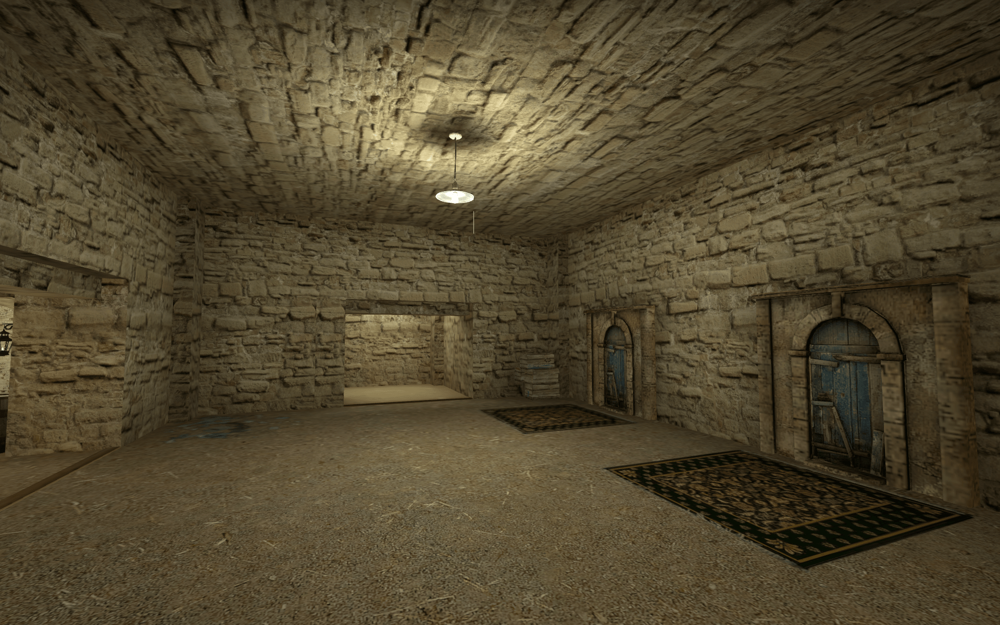 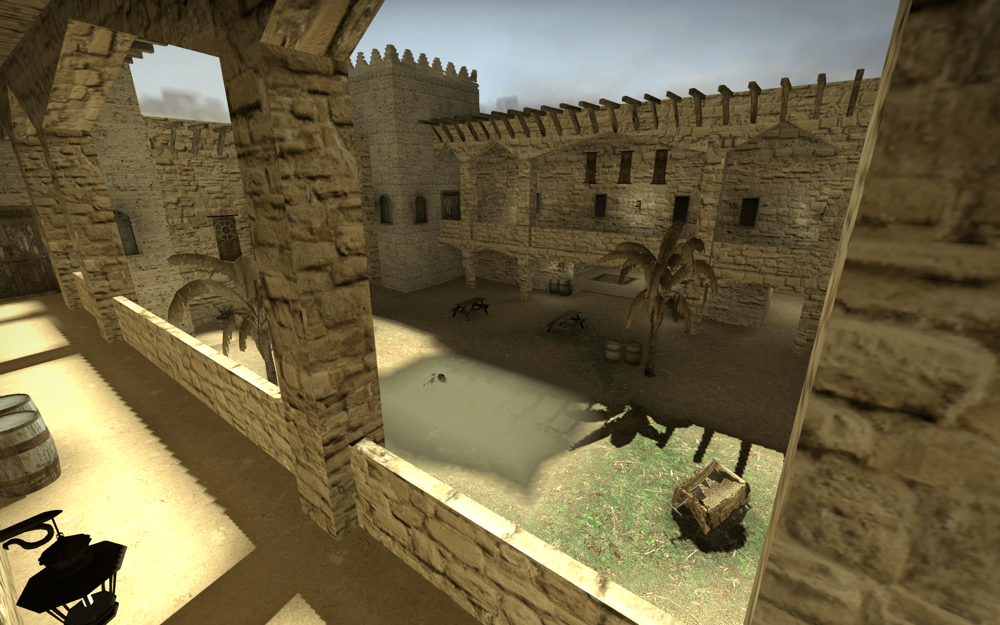 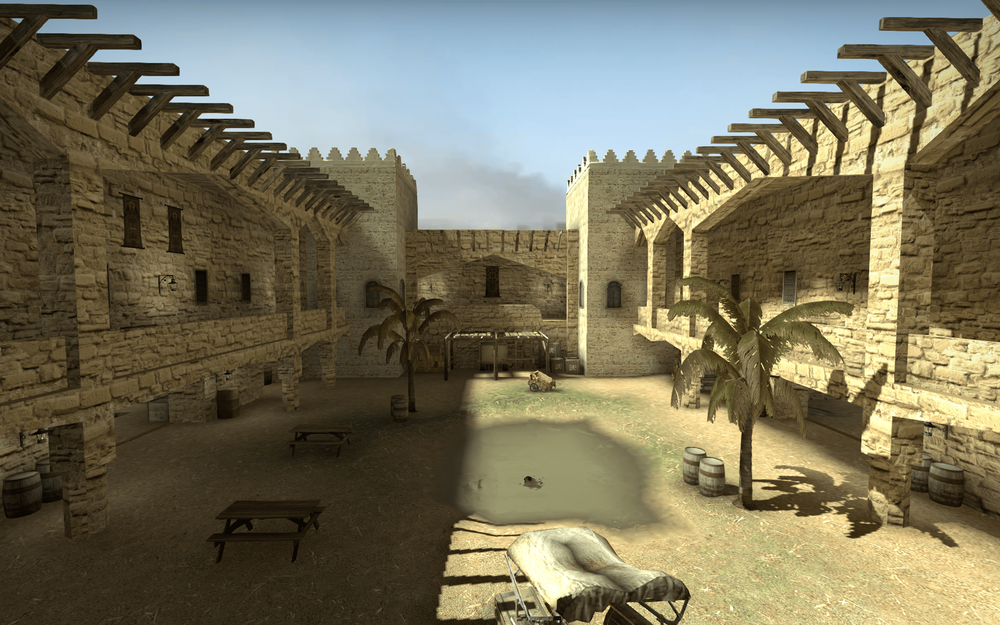 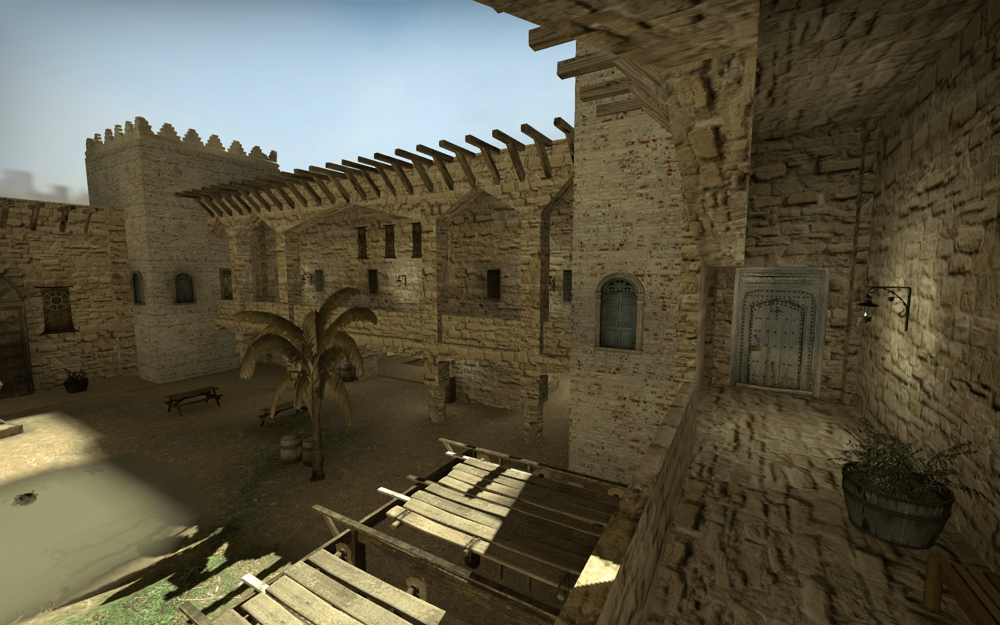 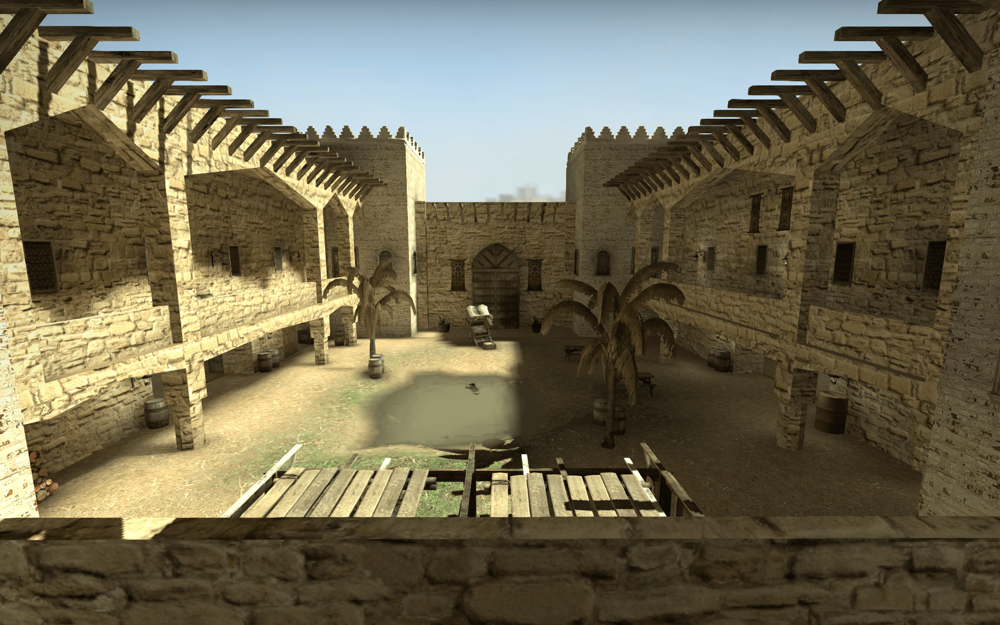Version 1.01
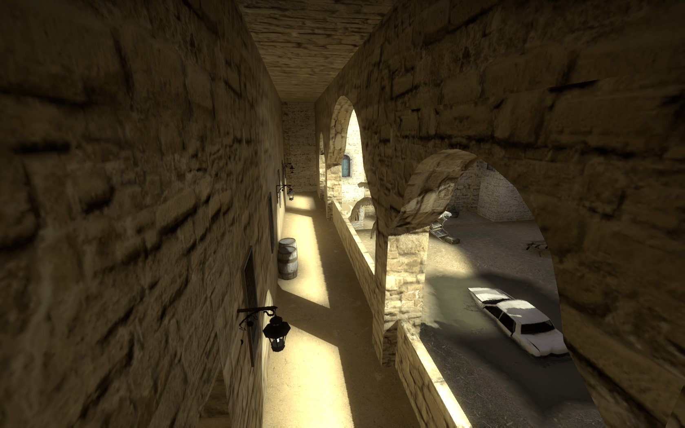 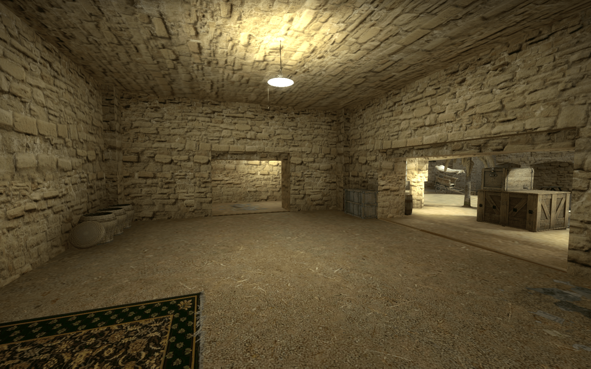 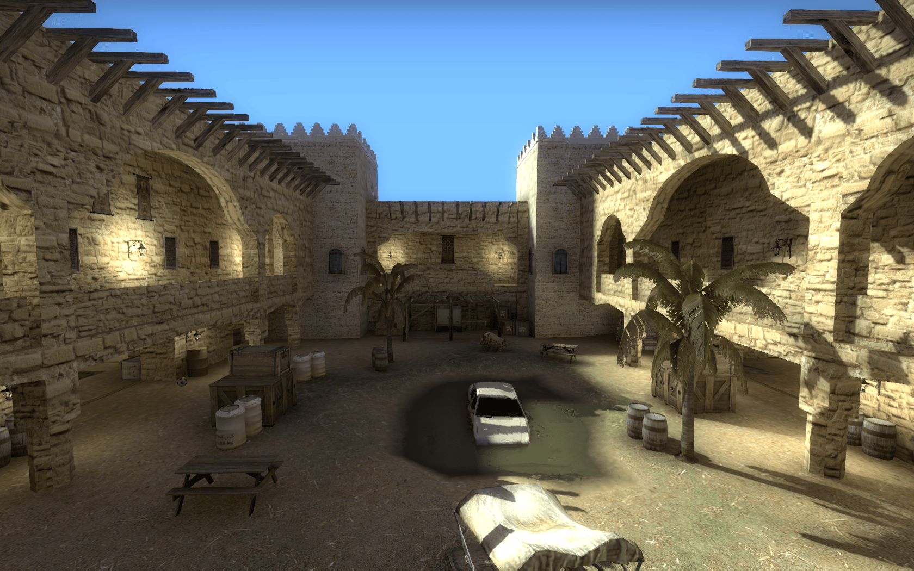 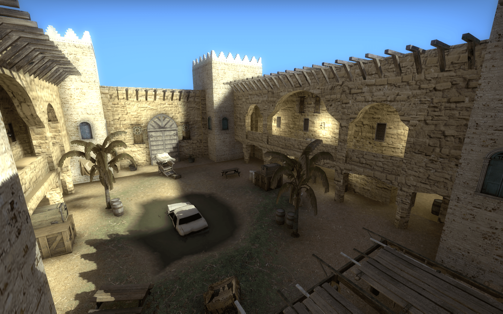Version 1.1
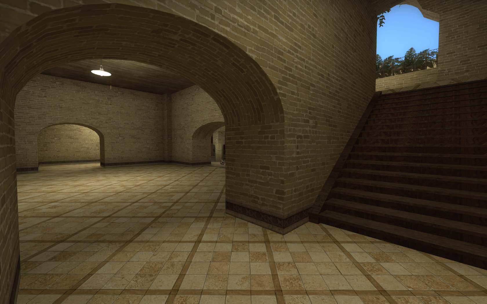 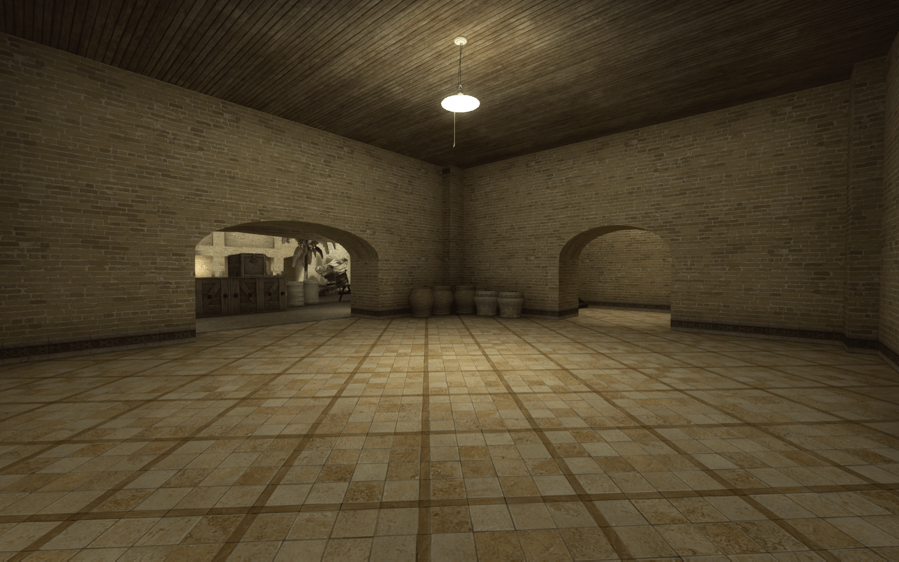 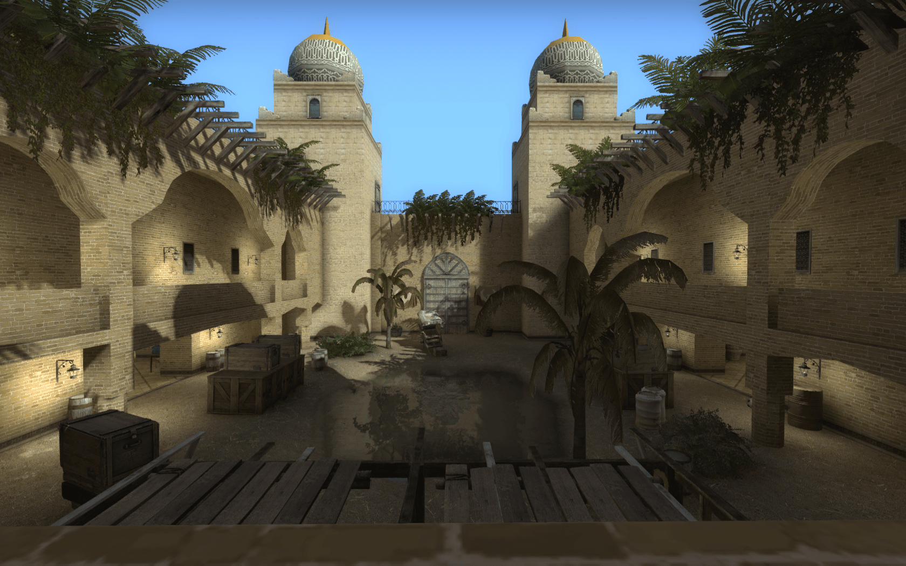 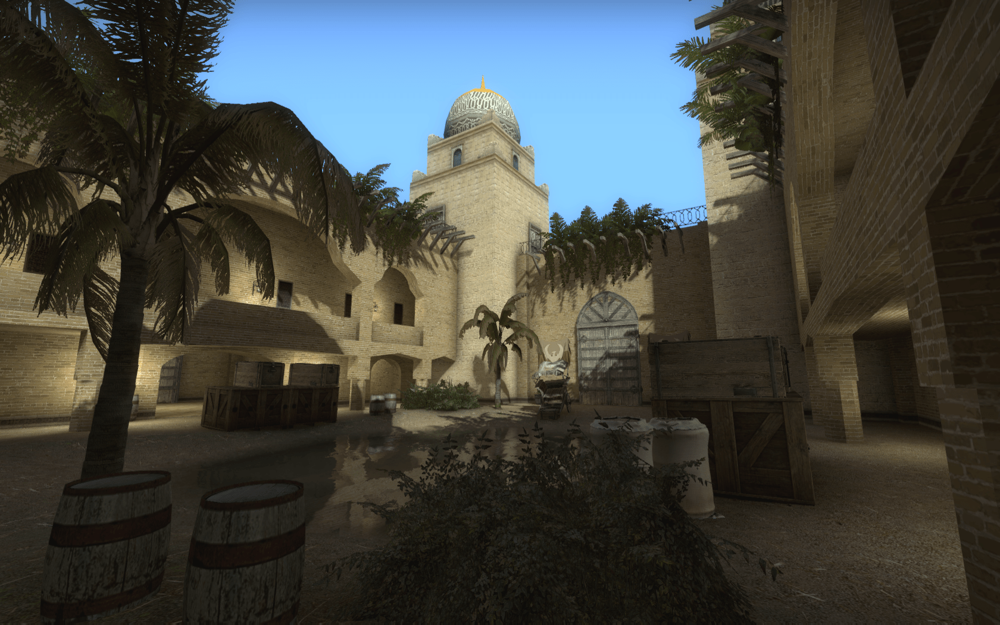Thank you for reading!